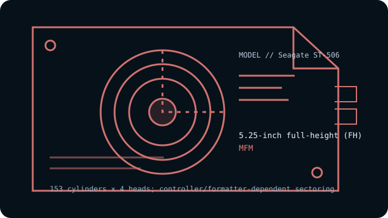

[ INDIVIDUAL COMPONENT // HARD DISK DRIVES ]
Seagate ST-506
Early 5 MB full-height MFM Winchester disk and namesake of the classic two-cable interface. This entry describes the named model, not every drive with similar markings.

IDENTIFICATION: Record the complete label, suffix, revision and controller details before handling. Do not substitute a related model’s geometry or encoding based on appearance alone.
Model specifications
| Exact model | Seagate ST-506 |
|---|---|
| Catalog classification | MFM and early magnetic drives |
| Capacity | 5 MB formatted (nominal model capacity) |
| Form factor | 5.25-inch full-height (FH) |
| Interface | ST-506 two-cable interface: 34-pin control and 20-pin data |
| Recording method | MFM |
| Drive geometry | 153 cylinders × 4 heads; controller/formatter-dependent sectoring includes 17 × 512-byte or 32 × 256-byte layouts |
| Host-controller compatibility | Requires a compatible ST-506/ST-412-style MFM controller, its matching 34-pin control and 20-pin data cables, power, correct drive select and controller-specific low-level formatting for the chosen sector size and geometry. It cannot connect directly to ATA/IDE, SATA, SCSI or USB without suitable bridging hardware. |
| Historical caveat | The ST-506 interface became a widely copied standard, but the Seagate ST-506 model itself is one specific early 5 MB MFM drive. Do not mistake later drives using the compatible interface for this model or assume their geometry is interchangeable. |
Host-controller compatibility
Requires a compatible ST-506/ST-412-style MFM controller, its matching 34-pin control and 20-pin data cables, power, correct drive select and controller-specific low-level formatting for the chosen sector size and geometry. It cannot connect directly to ATA/IDE, SATA, SCSI or USB without suitable bridging hardware.
- Confirm the full model and revision on the label, controller make/model, cable pinouts, power requirements, drive-select jumpers, and termination before connection.
- Verify that the controller supports the exact encoding, CHS geometry and sector size shown above; controller and BIOS translations can vary between systems.
- Do not attach this drive directly to modern SATA, IDE/ATA, SCSI or USB ports. Any bridge must explicitly support the legacy ST-506/ST-412 signaling and drive format; connector resemblance is not electrical compatibility.
Historical and preservation notes
The ST-506’s sector size and sectors-per-track can depend on its original formatter/controller; its headline capacity alone does not establish a unique CHS format. Early controller/BIOS designs may have fixed geometry tables and may require manual configuration. Preserve the original controller/drive pairing where possible; do not power an unknown or deteriorated unit solely because the connectors fit.
These drives are decades old. If data matters, avoid exploratory low-level formatting, repeated power cycling or writes; preserve the original controller settings and seek qualified recovery help for a failing mechanism. Treat any catalog capacity as approximate until the original manual and host configuration are checked.
Sources & further reading
- Seagate ST-506 Product Manual (archival scan)Original product manual for the named ST-506 drive; consult its revision for electrical and mechanical limits.
- ST-506/ST-412 interface historyHistorical overview of the interface standard and its two-cable architecture; not a substitute for the ST-506 product manual.
Use the model-specific documentation for the full label and revision. Third-party archival listings are useful cross-references but may summarize a family or use rounded capacity values.